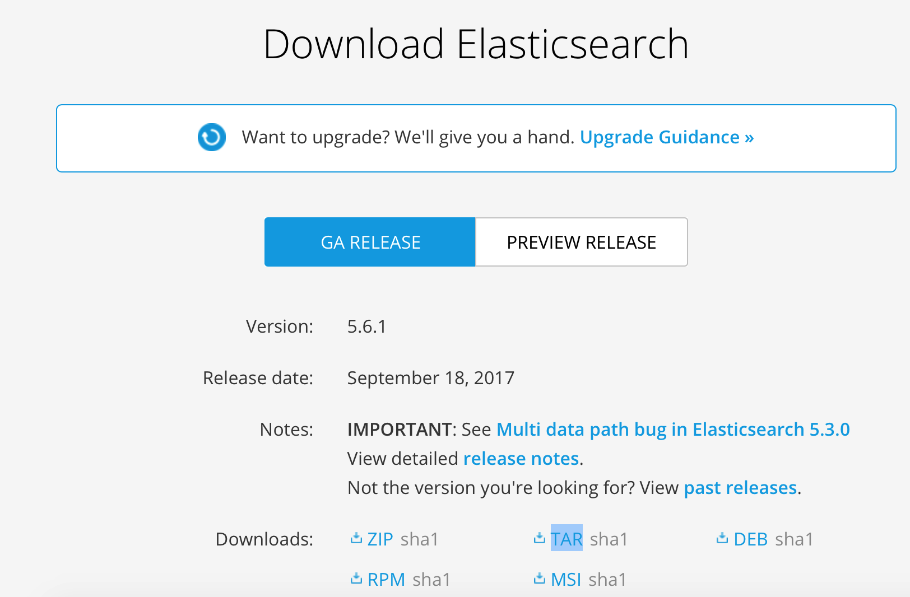
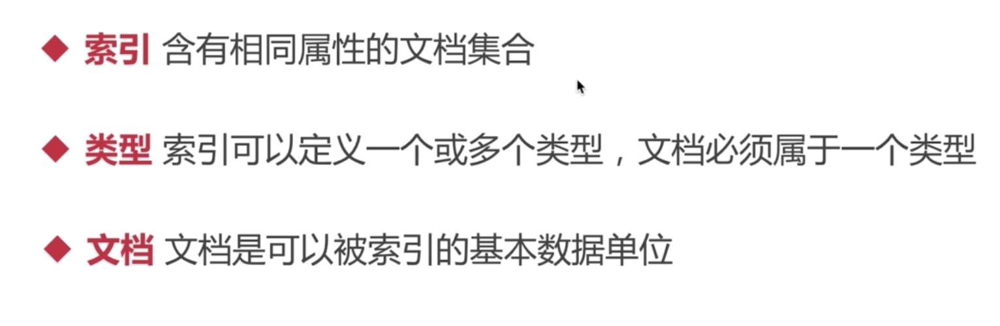
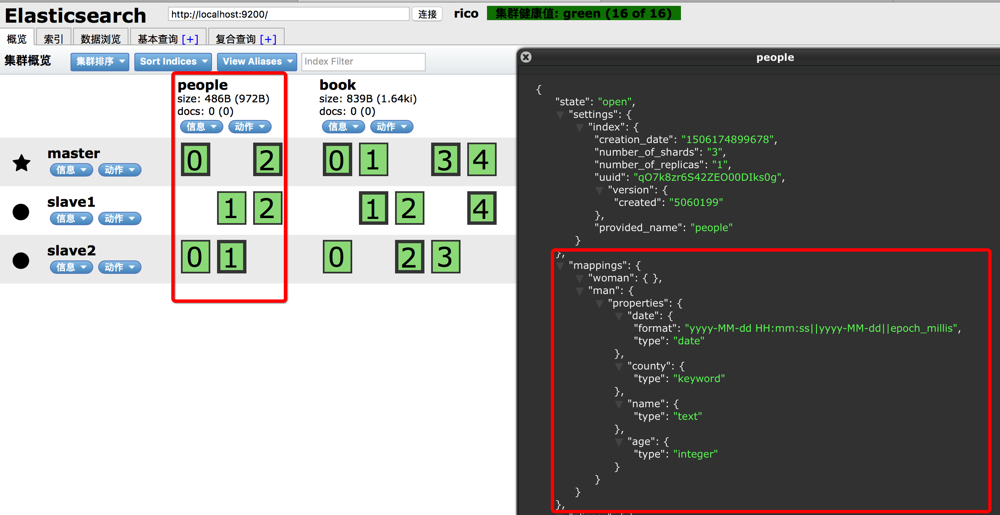

ElasticSearch入门学习笔记
本文为慕课网ElasticSearch学习笔记,步骤均为亲手尝试实践
ElasticSearch简介
基于Apache Lucene构建的开源搜索引擎
采用Java编写，提供简单易用的RESTFul API
轻松的横向扩展,支持PB级的结构化或非结构化数据处理
可应用场景
- 海量数据分析引擎
- 站内搜索引擎
- 数据仓库(利用ES强大的分布式存储能力)
一线公司实际应用场景
- 英国卫报–实时分析公众对文章的回应
- 维基百科,Github–站内实时搜索
- 百度–实时日志监控平台
ES版本历史和选择
版本历史 1.x–>2.x–>5.x
版本选择:
es5.x支持lucene6,性能有大幅提升,磁盘空间相交之前也少了一半,查询性能提升了25%左右
2.x不被重视，也不会继续开发了
我们这里选择5.x
单实例安装

下载好之后
tar -zxvf elasticsearch-5.6.1.tar.gz
cd elasticsearch-5.6.1
可以看到如下文件结构
bin是存放es启动脚本的
config是存放es配置文件的目录
lib是它依赖的第三方库的目录
modules是它的模块目录
plugins是它的第三方插件的目录
使用命令./bin/elasticsearch来启动ES

started表示启动成功,地址是localhost:9200
访问http://localhost:9200
显示如下
es单实例安装完成
插件安装
实用Head插件安装
es返回的是json格式的，不是很友好，head插件提供了友好的web界面，同时还可以实现基本信息的查看，rest请求的模拟，以及数据的基本检索
head插件地址 https://github.com/mobz/elasticsearch-head
head要求node大于等于6.0
我们使用8.2.1版本的node
下载完成之后使用npm install --registry=https://registry.npm.taobao.org安装
使用命令npm run start 运行这个插件 然后访问http://localhost:9100
es和head插件是2个不同的程序，而且端口也不一样，他们2个之间互相访问存在跨域问题，所以这里改2个配置
vim config/elasticsearch.yml
在最下面加入2行
http.cors.enabled: true #注意:后面有空格
http.cors.allow-origin: "*" #注意:后面有空格
然后用后台方式启动es./bin/elasticsearch -d
然后再启动head插件，访问localhost:9100
就可以看到head连接es成功了,而且健康值是绿色
健康值还有黄色和红色
黄色代表健康值不是很好,但是可以正常使用；red表示集群的情况很差了
后台启动的es如何关闭呢？ 答:使用 kill -9
分布式安装
我们会建一个集群，3个节点，1个master ,2个slave
编辑conf/elasticsearch.yml
加入如下配置
cluster.name: rico #指定集群的名字
node.name: master #给master起一个名字
node.master: true #告诉它它就是master
network.host: 127.0.0.1 #绑定的IP ,端口不用改，默认就是9200
IP绑定为127.0.0.1之后就不能用localhost访问了,必须用127.0.0.1了
然后启动es和head
访问如下 ，可以看到集群名字和master已经变成rico和master了
我们新建2个目录，es_slave1和es_slave2,然后把es的程序拷贝进去，然后解压
然后修改slave的es的配置
加入如下配置
luster.name: rico #这个必须与master保证一致
node.name: slave1 #给这个节点起一个名字
network.host: 127.0.0.1 #绑定IP
http.port: 8200 ## 不能和master的端口冲突 默认不配就是9200和master重了
discovery.zen.ping.unicast.hosts: ["127.0.0.1"] #这个配置的作用是找到master,如果不加这个配置的话,这个slave会游离于集群之外,找不到集群的master的
slave可以不加
http.cors.enabled: true
http.cors.allow-origin: "*"
先后启动slave1和slave2,然后我们访问head插件地址就可以看到下图
我们可以看到一个master(五角星)，2个slave(圆点)
从这里可以看到，我们的es扩容是非常容易的
基础概念
每个集群都有一个唯一的名字,默认叫elasticsearch,所有节点都是通过集群名字来加入集群的, 每一个节点还有它自己的名字
节点能够存储数据，参与集群索引数据，搜索数据的独立服务

通常我们定义有相同字段的文档作为一个类型
文档是es里面最小的存储单位
索引在es中是通过名字来识别的，而且必须是英文字母小写且不含中划线,我们都是通过这个名字来对索引进行增删查改的操作
索引相当于数据库里的database ,类型相当于table，文档相当于sql里的一行记录
举个例子：
一个信息查询系统，用ES来做存储,里面的数据可以分为各种各样的索引，例如图书索引，家具索引，汽车索引。 图书索引又可以分为各种类型，例如科普类，计算机类，小说类等，具体到每一本书就是文档
为何要分片？
假设一个索引的数据量很大，就会造成硬盘的压力很大，同时，搜索速度也会出现瓶颈,这时就可以将索引分成多个分片,分摊压力,分片的同时还允许用户进行水平的拆分，和分布式的操作，可以提高搜索和其他操作的效率
备份有哪些好处?
当一个主分片失败，或者出现问题时，备份的分片就可以代替工作，从而提高了es的可用性，备份的分片还可以执行搜索操作,以分摊搜索的压力,es默认在创建索引时会创建5个分片，1份备份,这个数量是可以修改的,分片的数量只能在创建索引时指定,而不能再后期进行修改,而备份可以修改
索引创建
RESTFul API
创建索引
非结构化创建
我们使用head插件来新建索引
粗方框的是主分片,西细方框的是备份分片
如何知道一个索引是结构化还是非结构化的?
点击查看索引信息,mappings如果是空的就是非结构化的
结构化创建
如何建立结构化的索引呢？
点击复合索引
输入book索引,加一个类型novel，小说,接着加一个关键词_mappings给它加一个映射
内容写json结构体，也就是它的映射结构,
{
"novel": {//novel是类型前缀,
//然后在这里定义它的结构
"properties": {//关键词properties,在这里定义它的每一个字段
"title": {//自定义的 标题
"type": "text"//给title定义类型 type:text 表示是文本
}
}
}
}
结果是”acknowledged”:true表示成功
这时我们看到mappings里面有内容了,有一个novel小说,它里面是有结构映射的
接下来我们使用工具POSTMan ，它是一个http模拟器

新的索引名 people
{
"settings":{//关键词settings,指定索引的配置
"number_of_shards":3,//指定索引的分片数
"number_of_replicas":1//指定备份数
},
"mappings":{//索引映射定义
"man":{//加一个类型 man
"properties":{//属性
"name":{//名字
"type":"text"//类型是文本类型
},
"county":{//国家
"type":"keyword"//国家是不可切分的，是一个关键词
},
"age":{//年龄
"type":"integer"//类型是int
},
"date":{//出生日期
"type":"date",//格式是date
"format":"yyyy-MM-dd HH:mm:ss||yyyy-MM-dd||epoch_millis"//多种类型定义 年月日 小时分秒和年月日和时间戳
}
}
},
"woman":{
}
}
}
去head插件里看一下 ,可以看到有people了,点击索引信息，可以看到格式映射是完全按照我们自己定义的

数据插入
- 指定文档id插入
- 自动产生文档id插入
文档id是唯一索引值，指向文档数据
采用put方式,people是索引，man是类型,1是我们给他指定的一个id,也就是文档id
返回结果和我们的信息也是对应的,index是people，type是man，id是1
我们回head插件看到docs是1了，也就是我们刚插入的数据成功了
我们浏览数据
id是我们自己指定的
接下来我们看如何让es在我们插入文档的时候自动产生id
采用post方式,url不要写id，这样es就会产生id
修改
- 直接修改文档
- 脚本修改文档
直接修改文档
127.0.0.1:9200/people/man/1/_update
方式是post,1表示我们要修改的文档的id,_update是关键词，表示我们要对文档进行修改
{
"doc":{//关键词,要修改的文本就写在doc里面
"name":"HogwartsRico"
}
}
我们查看head插件，可以看到数据已经修改了
脚本修改
{
"script":{//script关键字 es以脚本的方式去运行修改
"lang":"painless",//指定脚本语言,es支持很多的脚本语言, painless是内置的脚本语言,还支持js,python,groovy等脚本语言,这里我们选择es内置的painless
"inline":"ctx._source.age+=10"//inline指定脚本内容，ctx代表es上下文,_source代表es当前的文档
}
}
可以看到结果修改了
我们还可以将参数放到外面
删除
删除文档
这里我们删除id为1的文档
使用delete方式
删除索引
使用head插件删除
这里有个确认操作，因为删除操作是很危险的，当我们删除索引时，索引和所有数据都会被删除
使用rest删除

删除操作非常危险，谨慎操作
查询
我们先造几个模拟数据
{
"settings":{"number_of_shards": 3,"number_of_replicas": 1},
"mappings":{
"novel":{
"properties":{
"word_count":{"type":"integer"},
"author":{"type":"keyword"},
"title":{"type":"text"},
"publish_date":{"type":"date","format":"yyyy-MM-dd HH:mm:ss || yyyy-MM-dd || epoch_millis"}
}
}
}
}
{
"word_count":50000,
"title":"菜谱",
"author":"abc",
"publish_date":"2017-09-21"
}
等等
简单查询
查询id唯一的文档
127.0.0.1:9200/book/novel/1
条件查询
{
"query":{//es所有查询都是以query为关键词的
"match_all":{}//查询所有的数据
}
}
took：2表示这个查询花2毫秒
hits代表响应结果
hits的total是8，表示总共有8条数据,hits默认返回10条数据
如果size不指定，那么默认返回10条_shards：描述了查询分片的信息，查询了多少个分片、成功的分片数量、失败的分片数量等_score是文档的分数信息，与排名相关度有关，参考各大搜索引擎的搜索结果，就容易理解
如何指定返回的数据大小和从哪里返回呢？
{
"query":{
"match_all":{}
},
"from":1,//返回第二条数据(从0开始数)
"size":1
}
文档的顺序是按照_score默认倒排的
如何将查询变成关键词查询呢？
这里的返回结果是以_score默认倒排的,如何自定义自己的排序呢？
{
"query":{
"match":{"title":"java"}
},
"sort":[//指定需要排序的字段
{
"publish_date":{//publish_date作为排序字段
"order":"desc"//默认是升序的，我们改成倒序
}
}
]
}
返回结果
我们发现score这个字段变成null了，是因为我们指定了排序规则,
下面的高级查询会做更多关于查询的介绍
聚合查询
单个分组聚合
{
"aggs":{//aggs是聚合查询的关键词
"group_by_word_count":{//给聚合条件起一个名字,这个名字是自定义的，可以随便起
"terms":{//关键词
"field":"word_count"//指定聚合的字段
}
}
}
}
结果会将所有数据返回并在结尾返回聚合后的数据
多个分组聚合
{
"aggs":{
"group_by_word_count":{
"terms":{
"field":"word_count"
}
},
"group_by_publish_date":{
"terms":{
"field":"publish_date"
}
}
}
}
es的其他功能函数
{
"aggs":{
"grades_word_count":{
"stats":{//stats表示进行下计算
"field":"word_count"
}
}
}
}
结果
count总共有12个数 min最小值 avg 平均值 sum总和
也直接支持这里面的函数
{
"aggs":{
"grades_word_count":{
"min":{
"field":"word_count"
}
}
}
}
SpringBook集成ES
ESConfig.java
@Configuration
public class ESConfig {
@Bean
public TransportClient client() throws UnknownHostException {
InetSocketTransportAddress node=new InetSocketTransportAddress(
InetAddress.getByName("localhost"),//address
9300//tcp端口
);
//设置自定义配置
Settings settings = Settings.builder().put("cluster.name","rico").build();//集群名
TransportClient client=new PreBuiltTransportClient(settings);//这里需要传入es的配置
client.addTransportAddress(node);
return client;
}
}
增加和查询
Controller.java
@Autowired
private TransportClient client;
//获取图书的功能
@GetMapping("/get/book/novel")
@ResponseBody
public ResponseEntity getBookNovel(@RequestParam(name="id",defaultValue = "") String id){
if(id.isEmpty()){
return new ResponseEntity(HttpStatus.NOT_FOUND);
}
GetResponse result= this.client.prepareGet("book","novel",id).get();//索引,类型 prepareGet获取索引
if(result.isExists()){
return new ResponseEntity(result.getSource(), HttpStatus.OK);
}else{
return new ResponseEntity(HttpStatus.NOT_FOUND);
}
//http://localhost:8080/get/book/novel?id=2
}
//增加图书的功能
@PostMapping("add/book/novel")
@ResponseBody
public ResponseEntity add(@RequestParam(name="title") String title,
@RequestParam(name="author") String author,
@RequestParam(name="word_count") int wordCount,
@RequestParam(name="publish_date") @DateTimeFormat(pattern = "yyyy-MM-dd HH:mm:ss") Date publish_date){
XContentBuilder content= null;
try {
content = XContentFactory.jsonBuilder().startObject().field("title",title).field("author",author).field("word_count",wordCount).field("publish_date",publish_date.getTime()).endObject();
} catch (IOException e) {
e.printStackTrace();
return new ResponseEntity(HttpStatus.INTERNAL_SERVER_ERROR);
}
IndexResponse result= this.client.prepareIndex("book","novel").setSource(content).get();//prepareIndex准备构建索引 book是索引名 nove是type
return new ResponseEntity(result.getId(),HttpStatus.OK);
}
删除
@DeleteMapping("delete/book/novel")
@ResponseBody
public ResponseEntity delete(@RequestParam(name="id") String id){
DeleteResponse result=this.client.prepareDelete("book","novel",id).get();
return new ResponseEntity(result,HttpStatus.OK);
}
更新
@PutMapping("update/book/novel")
@ResponseBody
public ResponseEntity update(
@RequestParam(name="id") String id,
@RequestParam(name="title",required = false) String title,
@RequestParam(name="author",required = false) String author,
@RequestParam(name="word_count",required = false) Integer word_count,
@RequestParam(name="publish_date",required = false) @DateTimeFormat(pattern = "yyyy-MM-dd HH:mm:ss") Date publish_date
){
UpdateRequest update=new UpdateRequest("book","novel",id);
XContentBuilder content=null;
try {
content=XContentFactory.jsonBuilder().startObject();
if(title!=null){
content.field("title",title);
}
if(author!=null){
content.field("author",author);
}
if(word_count!=null){
content.field("word_count",word_count);
}
if(publish_date!=null){
content.field("publish_date",publish_date.getTime());
}
content.endObject();//必须以endObject结尾
update.doc(content);
try {
UpdateResponse result=this.client.update(update).get();
return new ResponseEntity(result,HttpStatus.OK);
} catch (InterruptedException e) {
e.printStackTrace();
return new ResponseEntity(HttpStatus.INTERNAL_SERVER_ERROR);
} catch (ExecutionException e) {
e.printStackTrace();
return new ResponseEntity(HttpStatus.INTERNAL_SERVER_ERROR);
}
} catch (IOException e) {
e.printStackTrace();
return new ResponseEntity(HttpStatus.INTERNAL_SERVER_ERROR);
}
}
//一般情况下，我们如果要在表单中上传文件，一般会将form的enctype参数设置为multipart/form-data。这种方式只支持POST的请求方式。
//put的话就用 x-www-form-urlencoded
符合查询接口
@PostMapping("query/book/novel")
@ResponseBody
public ResponseEntity query(
@RequestParam(name="author",required = false) String author,
@RequestParam(name="title",required = false) String title,
@RequestParam(name="gt_word",defaultValue = "0") Integer gt_word,//大于多少字
@RequestParam(name="lt_word",required = false) Integer lt_word//小于多少
){
BoolQueryBuilder boolQuery= QueryBuilders.boolQuery();
if(author!=null){
boolQuery.must(QueryBuilders.matchQuery("author",author));
}
if(title!=null){
boolQuery.must(QueryBuilders.matchQuery("title",title));
}
RangeQueryBuilder rangeQueryBuilder=QueryBuilders.rangeQuery("word_count").from(gt_word);
if(lt_word!=null&<_word>0){
rangeQueryBuilder.to(lt_word);
}
boolQuery.filter(rangeQueryBuilder);
SearchRequestBuilder builder=this.client.prepareSearch("book")
.setTypes("novel")
.setSearchType(SearchType.DEFAULT.DFS_QUERY_THEN_FETCH)
.setQuery(boolQuery)
.setFrom(0).setSize(10);//当你的数据量足够多的时候，可以用QUERY_THEN_FETCH
System.out.println(builder);//直接打印请求体
SearchResponse response=builder.get();
List<Map<String,Object>> result=new ArrayList<Map<String,Object>>();
for(SearchHit hit:response.getHits()){
result.add(hit.getSource());
}
return new ResponseEntity(result,HttpStatus.OK);
}
This blog is under a CC BY-NC-SA 3.0 Unported License
本文链接：http://hogwartsrico.github.io/2017/09/22/Introduction-of-ElasticSearch/